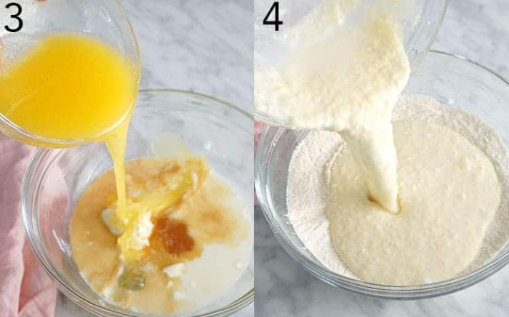

An ultra-moist and completely delicious vanilla cake filled with tons of sprinkles and creamy vanilla buttercream. The whole cake is enrobed in a silky Italian meringue buttercream and topped with a light pink ganache. This might be the perfect birthday cake, and yes this batter makes amazing funfetti cupcakes too!
1. Preheat oven to 340 degrees F. Butter and flour three 6-inch pans. I use cake strips on my pans for more even baking as well. Sift the dry ingredients together in a large bowl and whisk together.
2. Separate the room temperature eggs. You can use the yolks for a batch of French buttercream or custard.
3. Add the milk, sour cream, vanilla, egg whites, and butter into a bowl and whisk together. Don’t worry if you see little lumps.
4. Pour the wet mixture into the dry and mix together.